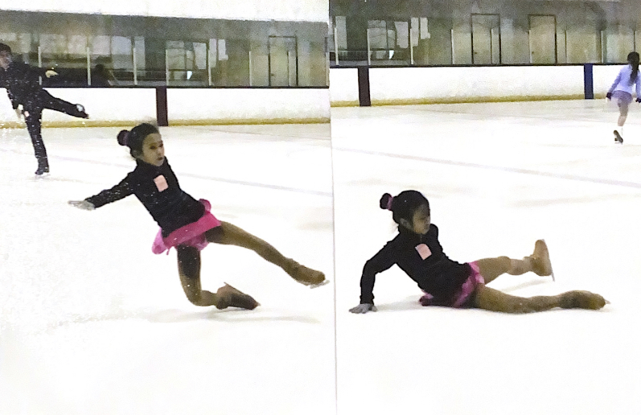
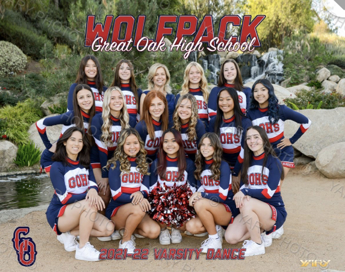
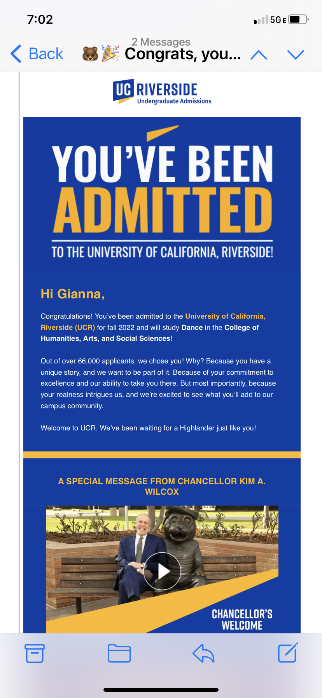
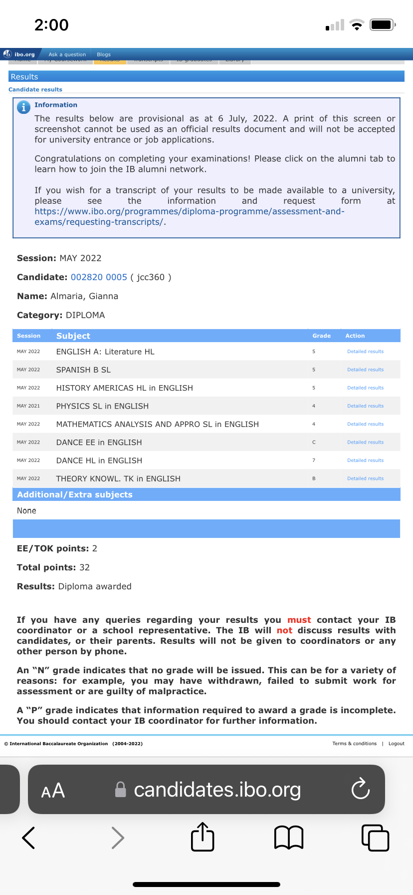
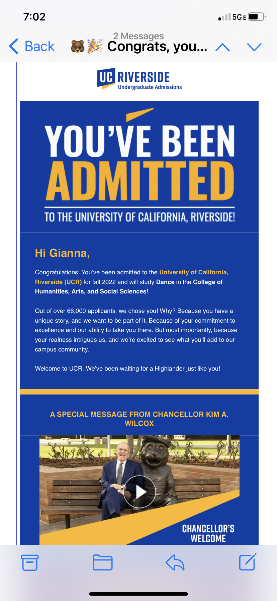
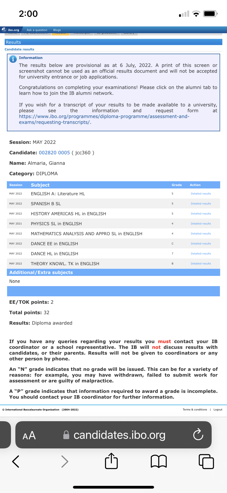

Gianna Almaria
My greatest talents are figure skating and dance, which I consider inseparable. I started taking ice skating classes when I was 9 and I was offered a spot on a synchronized skating team. This drove me to maximize my potential. Since then, my training has become intensive. I skated with my team for 6 to 10 hours a week to prepare for competitions, on top of my skating classes and private lessons. I had a hectic schedule, but my passion for skating made it worth it.
To improve my skills and artistry in ice skating, I enrolled in jazz and ballet classes. Shortly after, I auditioned for and joined the studio's Competitive Intensive Program, which opened my new passion for dance. The next season, I qualified for the Company Team. It required many more hours, so I decided to take a break from skating to focus on dance and competitions. It was rigorous, taking 9-12 hours a week and extending my training into hip hop, tap, and pointe ballet. I took gymnastics classes to learn common dance tricks such as aerials. In addition, I have also been on my high school dance team. It helped me build up my confidence, performing at every home football and basketball game in front of large audiences. Furthermore, I have taken dance classes all four years at school, including IB dance, giving me the opportunity to study dance from an academic perspective. I have choreographed pieces and wrote papers to explore my dance knowledge beyond my training. I have developed a great interest in dance studies. Currently, I am taking dance studies classes in my college education on my path to obtaining a degree in dance.
I have taken a pause in my training in figure skating to focus on my studies but over the past year, I specialized in partnered ice dance. I also had the opportunity to intern at my ice rink, Icetown Riverside, as an assistant coach.
The most significant challenge that I had faced was when I intensified my dance training by joining my studio's company team. This entailed over 9 hours of dance technique classes per week plus team rehearsals on the weekends for competition.
Transitioning from recreational into company classes took a toll on my confidence at the beginning. In my previous dance and ice skating classes, I was always praised for my performance. But in the company classes, I was surrounded with dancers who have been in company for their entire life. I was pushing myself out of my comfort zone in dance genres I have never done before, especially tap and hip hop which most of the other dancers were already advanced at. To me, everyday felt like an audition but I now view this as a pivotal point where I improved my dance skills significantly. I felt challenged to do my best in every class as I felt the need to prove myself worthy of being on the team. Through this, I found my passion for dance and how much I was willing to commit for it. However, I became distracted in my academic classes while stressing out about my after-school practices. This affected me the most in my sophomore year as I fell severely behind in my AP World History class because I was unable to anticipate the heavy workload. But I was able to get through it successfully by a combination of efficient time management, focus, and late-night studying.
When the pandemic hit, all my team rehearsals and classes were held online. This was especially difficult because the process of learning choreography online was confusing in addition to the disadvantage that we were unable to practice formations. My teachers were extremely strict, making it scary for me to mess up even one move. However, through this pressuring atmosphere, I became an excellent visual learner and my ability to pick up choreography became faster than ever.
Experience
Developer
• Treasurer and Vice President of National Honor Society for Dance Arts X
• Assistant Coach Intern at Icetown Riverside
• International Baccalaureate Graduate
Education
UC Riverside
University of California Riverside
University of California Riverside
Portfolio





 